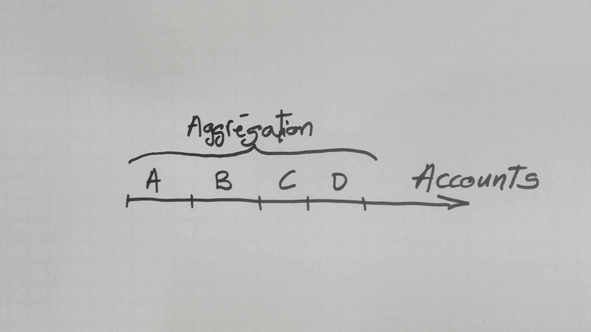
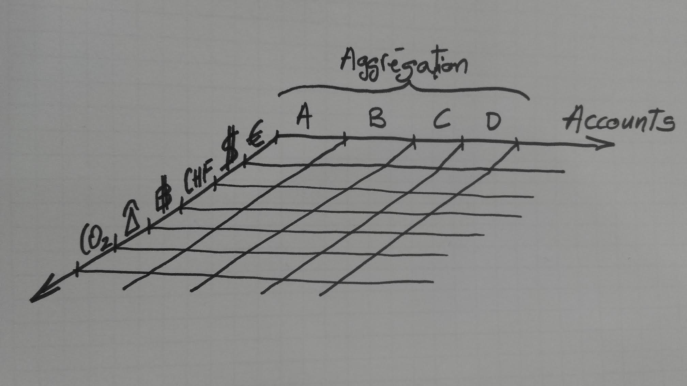

And then we can add a second axis which represents the currencies that are handled by these accounts. A surface is born on where each square represents activation by corporate clients but also needs for exchange management in addition of the initial simple cash management request.

Obviously, large corporations operate in as many countries as 180 and needs the ability to manage operations in these countries. That's the third axis on the drawing. The result is a cube, at maximum. But very often, it will be like a Swiss cheese with holes. For example, dollar won't be of much use to operate in Europe with the exception of import -financial flows.